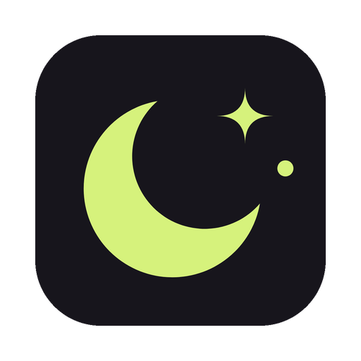
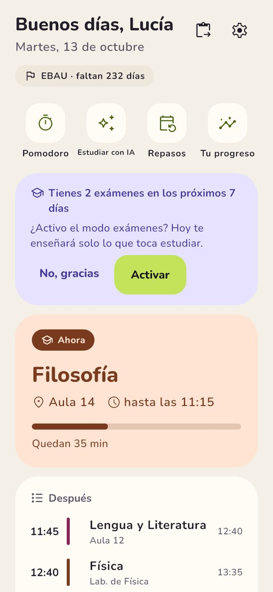
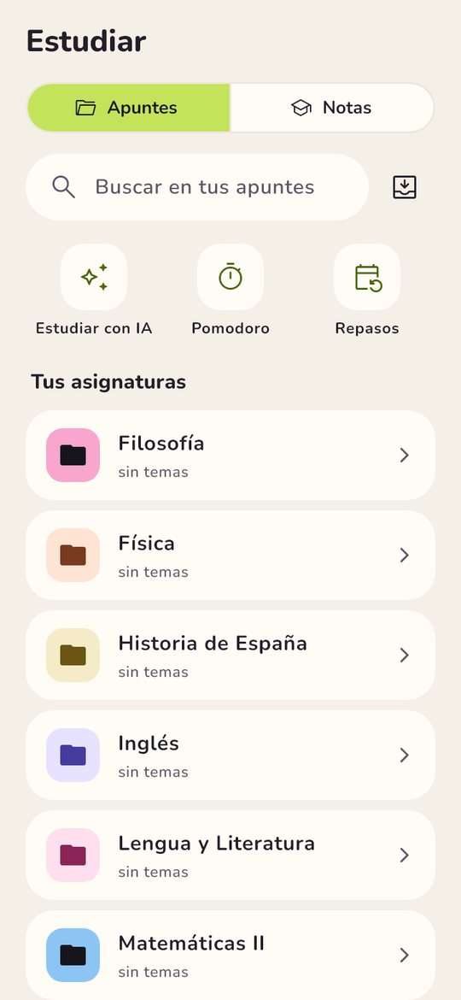
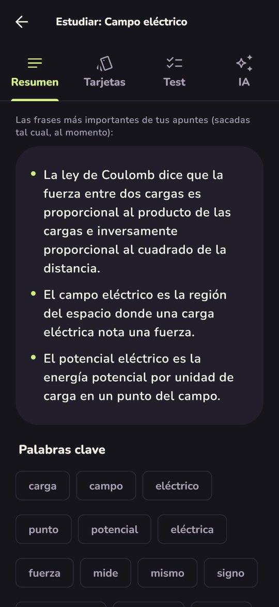
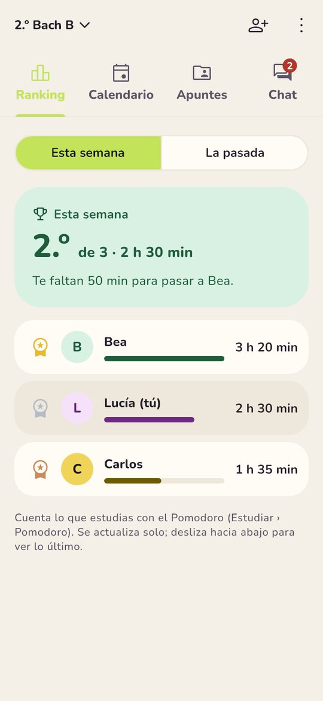
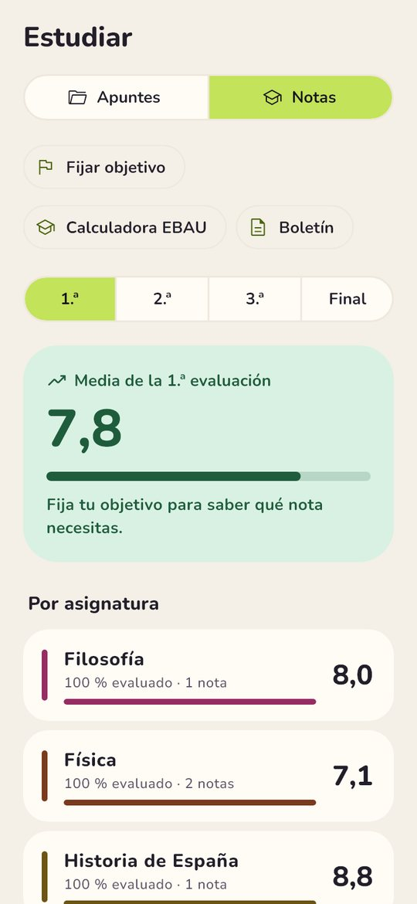

Tu curso, en una app
¿No se instala en tu móvil? Prueba la versión para todos los móviles (más grande).
iPhone: de momento no hay una forma fácil de instalarla; estamos en ello.





La clase de ahora, lo que viene después, tu próximo examen y tus hábitos.
Pega el mensaje del grupo de clase y los exámenes y deberes se apuntan solos. Con avisos.
Sube tus PDF y fotos: resumen, tarjetas de repaso y test sacados de tus apuntes.
Tu media de cada evaluación, la nota que necesitas y la calculadora de la EBAU.
Grupos de estudio con ranking de horas de la semana, calendario compartido, apuntes y chat.
Pomodoro con sonidos, rachas de hábitos y medallas. Y widgets en tu pantalla de inicio.